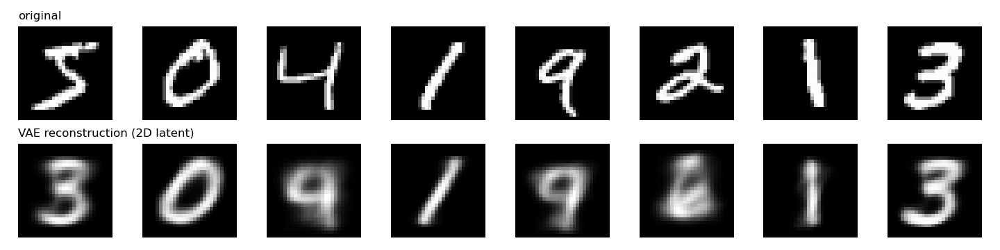
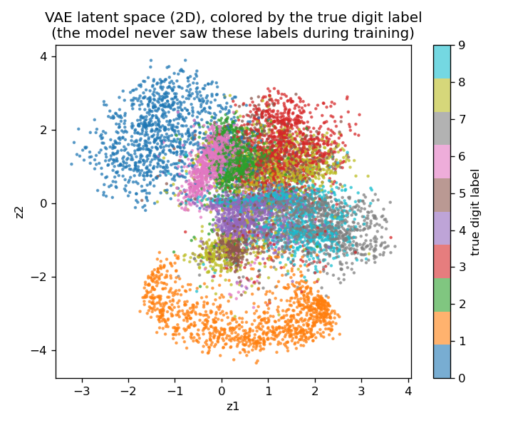
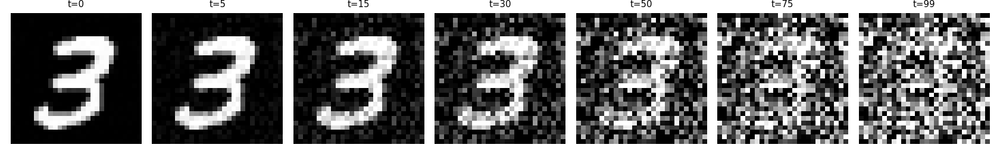
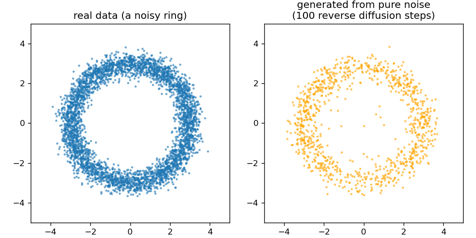

13 Day 13: Diffusion & Flow-Matching Models
Sources for this page: Arne’s own slides/Diffusion models (undervisning).pdf — this page follows its ordering (VAE before diffusion, diffusion before flow matching) and its own biological examples (DiffDock, RFdiffusion, ProteinMPNN, Chroma); Sohl-Dickstein et al. (2015), “Deep Unsupervised Learning using Nonequilibrium Thermodynamics”, PMLR 37:2256-2265 — the original diffusion-models paper, per the slide deck’s own citation; Corso, Stärk, Jing, Barzilay & Jaakkola (2023), “DiffDock: Diffusion Steps, Twists, and Turns for Molecular Docking”; Watson et al. (2023), “De novo design of protein structure and function with RFdiffusion”, Nature 620:1089-1100; Dauparas et al. (2022), “Robust deep learning-based protein sequence design using ProteinMPNN”, Science 378:49-56; Ingraham et al. (2023), “Illuminating protein space with a programmable generative model”, Nature 623:1070-1078. Wikipedia, Variational autoencoder — CC BY-SA 4.0. Every number and figure below was computed and verified in the notebook, not transcribed from the slides.
This is an extra session, not a guaranteed part of the course. It’s built and ready so it’s a real option, but the schedule marks it as a backup/buffer day the course will likely run without (see schedule.qmd). If you’re a student: don’t assume this material is examinable unless your instructor says otherwise, in a given year.
13.1 Learning goals
By the end of this session you should be able to describe what a variational autoencoder (VAE) learns and why it motivates a latent-space generative approach; describe how a diffusion model generates data by learning to reverse a noising process, and how flow matching reframes the same idea as learning a velocity field instead; and describe how these ideas carry over from image generation (DALL-E) to protein design (RFdiffusion, Chroma), and why ProteinMPNN is a necessary companion piece, not a competitor, to backbone-only diffusion methods.
13.2 Variational autoencoders: the latent-space idea
An ordinary autoencoder learns one fixed encoding per input — useful for compression, but the space of encodings has no particular structure, so sampling a random point in it and decoding usually produces garbage. A variational autoencoder (VAE) fixes this by learning a distribution over each input’s code (a mean and a variance, not a single point) and adding a term to the loss — the KL divergence between that distribution and a standard normal — that pulls every input toward a shared, smooth, sampleable latent space.
Trained on real MNIST digits with a deliberately tiny 2-dimensional latent space (small enough to plot directly — a real VAE would use far more), reconstructions are blurry and occasionally output a different digit than the input — a genuine, honest cost of squeezing everything through two real numbers, not a flaw in the idea itself:

What the tiny latent space buys you: it can be visualized directly, and digits of the same class cluster together — despite the model never seeing a single label during training:

This — a smooth, structured space you can sample from — is the direct conceptual ancestor of what diffusion models do next, just approached differently: instead of one latent space, learn to generate by reversing a gradual corruption process.
13.2.1 Further reading
- Wikipedia, Variational autoencoder
13.3 Diffusion models
The recipe, introduced by Sohl-Dickstein et al. in 2015 and now the technique behind DALL-E and Stable Diffusion:
- Forward process (fixed, no learning): repeatedly mix in a little Gaussian noise, following a schedule, until the data is indistinguishable from pure noise.
- Reverse process (learned): train a network to undo one small noise step at a time. Starting from pure noise and repeatedly applying the trained denoiser generates new, realistic data.
Concretely, on a real MNIST digit — no training involved yet, this is just the fixed forward schedule:

Does the reverse process actually work? Training a full image-generating diffusion model from scratch and getting recognizable MNIST digits out isn’t realistic in one session’s compute budget — a plain fully-connected network applied directly to MNIST pixels was tried and did not converge to recognizable digits in a reasonable training time, an honest negative result rather than something to paper over (this is exactly why real diffusion models use convolutional U-Nets or Transformers, and far more training). What does train reliably in seconds: a small 2D toy dataset (a noisy ring), where the reverse process can be checked directly against the real data distribution rather than by eye on a blurry image:

Same mechanism, same training objective (predict the noise that was added, at a given step), just applied at a scale small enough to verify directly. RFdiffusion (below) applies the identical recipe to 3D protein backbone coordinates instead of 2D points or image pixels.
13.3.1 Further reading
- Sohl-Dickstein et al. (2015), Deep Unsupervised Learning using Nonequilibrium Thermodynamics
13.4 Flow matching: an alternative to noise-reversal
Diffusion frames generation as reversing a stochastic noising process — formally, a stochastic differential equation (SDE). Flow matching reframes the same generative goal differently: learn a smooth, deterministic transformation (an ordinary differential equation — a velocity field) that carries the noise distribution to the data distribution directly, rather than undoing a random walk one noisy step at a time. Same destination, different math — and, in practice, often fewer steps needed at generation time since there’s no per-step randomness to average out.
13.4.1 Further watching
- “Flow-Matching vs Diffusion Models explained side by side” — AI Coffee Break with Letitia (linked directly in the source slide deck for this day; verified via YouTube’s own oEmbed API, not a 3Blue1Brown video)
13.5 Case study: protein design
Three real, current examples of exactly this recipe applied to molecules instead of pixels — described here, not run (each is a large, GPU-cluster-trained research model well beyond what a teaching notebook can reproduce, the same treatment Day 12 gave AlphaFold and ESM):
- DiffDock (Corso, Stärk, Jing, Barzilay & Jaakkola, 2023) frames molecular docking — where a small-molecule ligand binds a protein — as a diffusion process over the ligand’s pose (translation, rotation, and torsion angles), rather than over pixels or coordinates directly. It reports 38% top-1 accuracy (RMSD < 2 Å) on a blind-docking benchmark, against 23% for the best prior search-based method and 20% for the best prior deep-learning method — a real, substantial jump, not a marginal one. Notably, it uses ESM2 protein-language-model embeddings (Day 11-12’s thread) as one of its input features.
- RFdiffusion (Watson et al., 2023, Baker lab) generates protein backbones — 3D coordinates, no amino acid identities yet — using the same forward-noise/learned-reverse recipe demonstrated above, just in 3D coordinate space instead of 2D or pixel space. A backbone alone can’t be synthesized; it needs a sequence. That’s exactly what ProteinMPNN (Dauparas et al., 2022, also Baker lab) is for: a separate, non-generative, non-diffusion model that solves the inverse folding problem — given a backbone, find a sequence likely to fold into it (52.4% native-sequence recovery on real backbones, vs. 32.9% for the physics-based Rosetta method it replaced). RFdiffusion’s own released pipeline is literally these two models in sequence: diffuse a backbone, then run ProteinMPNN on it — two different models solving two different problems, not one model doing both.
- Chroma (Ingraham et al., 2023, Generate Biomedicines) takes the other architectural bet: one diffusion model that jointly co-designs sequence and structure together, rather than RFdiffusion+ProteinMPNN’s two-stage pipeline. Neither approach is simply “better” — it’s a real, teachable design-space tradeoff (one integrated model vs. two specialized ones) that shows up throughout machine learning, not just here.
13.5.1 Further reading
13.6 The notebook
notebooks/day13-diffusion-and-flow-matching-in-code.ipynb builds both generative models from scratch and verifies each one actually works: a VAE trained on real MNIST (the reconstructions and latent-space plots above), the forward noising process applied to a real digit, and a full working diffusion model — trained and sampled — on the 2D ring dataset, including the honestly-reported negative result of trying the same approach directly on MNIST pixels first. Open it in Google Colab via the badge at the top of the notebook page to edit and run it yourself.
13.7 Check your understanding
13.8 The lab
A light, exploratory exercise: run the notebook, then change the 2D toy dataset’s shape (e.g. two separated clusters instead of a ring, or a spiral) and confirm the same reverse-diffusion code still recovers whatever new shape you trained it on — a check that nothing above was tuned specifically for a ring.
13.8.1 Submitting this lab
Hand-in/grading for this lab isn’t set up yet. It will likely run through a Canvas assignment — check the course’s Canvas page for the actual submission mechanism before this session runs (if it runs at all — see the note at the top of this page).
13.9 What’s next
The capstone project picks up directly from Day 12, not from this extra session: the same secondary-structure-prediction problem posed descriptively on Day 7, now solvable with every tool built up from Day 5’s profiles through Day 12’s attention.